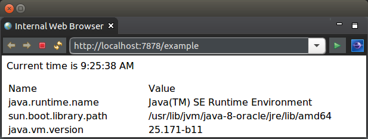
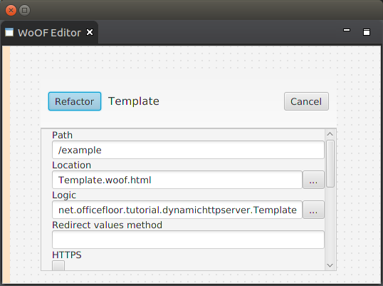

This tutorial demonstrates the simplicity in rendering dynamic content for a WoOF web application.
The example used in this tutorial is the following simple dynamic page to show the current time and the listing of System properties:
The HTML for the page is as follows:
<html>
<body>
<p>Current time is ${time}</p>
<table>
<tr>
<td>Name</td>
<td>Value</td>
</tr>
<!-- ${properties -->
<tr>
<td>${name}</td>
<td>${value}</td>
</tr>
<!-- $} -->
</table>
${noBean <p>This content will not be rendered</p> $}
</body>
</html>
First thing to notice is that the page/template can be rendered in a web browser. The reason for this is to ensure that web page content can be created/edited by WYSIWYG web design tools. This is deliberate to allow web page designers to focus on presentation of the web pages rather than having to understand scripting tags and to an extent programming constructs. It also means the template can be viewed without having written any code - great for reviewing and tweaking the pages.
To provide the developer control of rendering the dynamic content, there are non-obtrusive hooks for dynamically rending of the page. The two hooks used in the above template are:
The logic for the rendering the page is the following POJO (plain old java object).
Please note that WoOF integrates with Project Lombok to reduce the necessary code. As per below the @Data annotations are used to generate the getters and constructors for the inner class beans. It is highly recommended by the OfficeFloor team to consider use of Project Lombok to reduce the overall amount of code to be written.
public class TemplateLogic {
@Data
public static class Values {
private final String time;
private final Property[] properties;
private final Object noBean;
}
@Data
public class Property {
private final String name;
private final String value;
}
/**
* Reflectively invoked by WoOF to obtain the dynamic values to render to
* the page.
*
* @return Bean containing the dynamic values to render to the page
* identified by bean property name.
*/
public Values getTemplateData() {
// Obtain the time
String time = SimpleDateFormat.getTimeInstance().format(new Date());
// Create the listing of properties
List<Property> properties = new LinkedList<Property>();
for (String name : System.getProperties().stringPropertyNames()) {
String value = System.getProperty(name);
properties.add(new Property(name, value));
}
// Return the populated values
return new Values(time, properties.toArray(new Property[properties
.size()]), null);
}
}
WoOF reflectively invokes the getTemplateData method to obtain the bean containing the properties and further beans for dynamically rendering the page. The returned object from the method is interrogated for the properties and beans. In the case of above:
WoOF makes generating repeating content, such as tables, very simple. As the Values.getProperties() returns an array of Property objects, the contents are rendered for each element in the array. As the contents have two further properties (${name} and ${value}) these are taken from the current Property being rendered.
It is possible to have beans contain further beans to allow complex data structures to be rendered to the page.
To ensure integration between the Web Page Designer and Developer the bindings between the template and logic class are checked at start up so that missing bean and property methods are flagged immediately. It is these binding checks that allow the two roles to work efficiently together.
The TemplateLogic class has been kept simple in this example returning static content. Later tutorials will demonstrate the use of dependency injection into methods to allow retrieving values from a HTTP session, database, etc.
Now that the HTML template and logic class are available, they need to be configured into the WoOF application. This configuration is within the application.woof file at the root of the class path (i.e. has no package prefix). Under the hood this is an XML file however OfficeFloor has a strong focus on not hand coding XML configuration files. IDE plug-ins provides the graphical configuration of the WoOF web application.
The reason for using graphical configuration is two fold:
Once the IDE plug-in is installed you will be able to use the new wizard to create the application.woof file. On creating and opening there should be a blank editor. To make configuration changes:
For the tutorial, you need only the following configuration:
This is the only configuration necessary for this web application. The template will be made available at http://localhost:7878/example . Later tutorials will look at linking page flows and dynamic behaviour.
As the template logic is just a POJO, WoOF adheres to OfficeFloor's focus on simplicity in testing. The following example unit test shows the ease in which the TemplateLogic class can be unit tested.
@Test
public void templateLogic() {
TemplateLogic logic = new TemplateLogic();
assertEquals(System.getProperties().size(), logic.getTemplateData().getProperties().length,
"Number of properties");
}
The next tutorial will look at an interactive page.